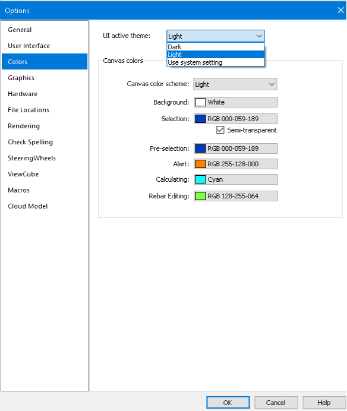
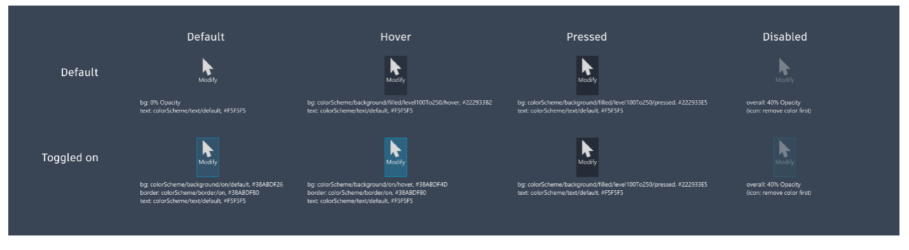

The Spring Festival is coming up this weekend, starting on Sunday, January 22, celebrating
the Chinese New Year and
another Year of the Rabbit.
In the lunar calendar, 2023 is a Water Rabbit Year.
The sign of the Rabbit is a symbol of longevity, peace, and prosperity in Chinese culture.
2023 is predicted to be a year of hope, especially after the long pandemic period.
Wishing all of us lots of health, energy and happiness in the new year!
In this new year, the Revit development team has another topic to share with us:
In a similar vein, here is another internal topic being pondered.
Please note the important safe harbor statement concerning these thoughts:
Roadmaps are plans, not promises.
We’re as excited as you to see new functionality make it into the products, but the development, releases, and timing of any features or functionality remains at our sole discretion.
These updates should not be used to make purchasing decisions.
So, the possibility that I would like to present today concerns supporting the Dark Theme and how to handle it in a Revit add-in:
Dark Theme Switching
Setting the UI Active Theme will switch the appearance of the Ribbon between light grey and dark blue, with three options:
Light
Dark
Use system setting
– Windows supports light and dark colour schemes.
If you choose this option, Revit will use the Windows colour scheme and switch to a matching theme accordingly.
Light:
Dark:
The UI Active Theme options can define other colour settings to override the default ones:

Dark Theme API
New properties and events may be added for dark theme support:
ThemeChangedEventArgs – Arguments for the ThemeChanged event
UIThemeManager.CurrentTheme – Allows you to set /get the overall theme for the Revit session
UIThemeManager.FollowSystemColorTheme – Allows you to set /get if the overall theme follows operating system color theme
UIThemeManager.CurrentCanvasTheme – Allows you to set/get a canvas theme for the current Revit session (as opposed to the default theme)
ColorOption – Allows you to set/get the colours in the current canvas theme
Dark Theme Icons
Here are samples of the default dark theme ribbon background and button colour settings:
Light ribbon background:
Dark ribbon background:
Light ribbon buttons:
Dark ribbon buttons:

Small button size: 16x16px
Large button size: 32x32px
Resolution: 96 DPI
Icons
Code Example: Handling Themed Ribbon Icons
internalclassTestRibbon : IExternalApplication
{
private PushButton m_ribbonBtn;
public Result OnStartup(UIControlledApplication application)
{
var ribbonPanel = application.CreateRibbonPanel("33900745-04F5-4CC2-9BAC-3230716E3A54", "Test");
var buttonData = new PushButtonData("Test", "Test", typeof(CmdEntry).Assembly.Location, typeof(CmdEntry).FullName);
Please note that only the 1st level UI supports the dark theme option.
Autodesk Icon Guidelines Snapshot
Prompted by Luiz'
and Gábor's comments below,
I acquired and posted an up-to-date snapshot of the current state of the Autodesk icon guidelines including the images above:
For more exciting news on possible upcoming product enhancements, check out
the Autodesk AEC Public Roadmaps with dozens of items in each of the sections: